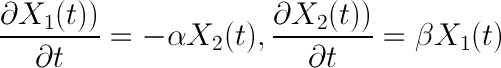
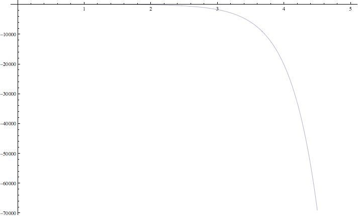
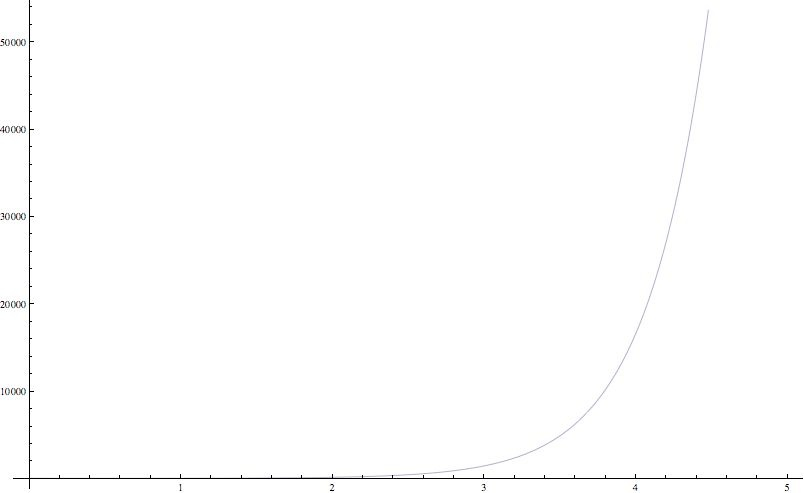
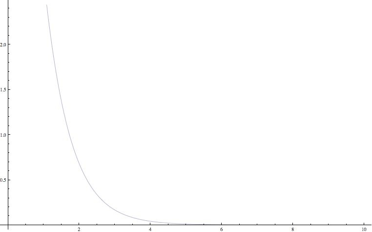
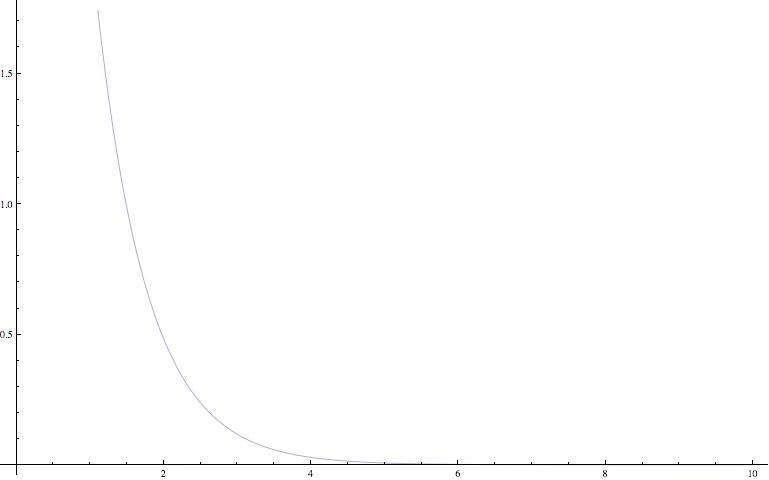

Relationships

There is a very old paper which expresses love between Romeo and Juliet in a differential equation format. I will use similar equations and then add some bells and whistles to it. This will make it more customized to the real world. I will also try to answer the question - What is the average life time of a relationship using empirical data. Yes there will be boundary conditions coz nothing lasts for ever.
Indian stereotypes generally have this format,
1. In a relationship if a girl becomes too possessive then guys feelings towards her become negative.
2. In a relationship if a guy becomes possessive / more loving then girls feelings towards him increase.
So using this basic empirical data, I can put up equations. Let's label the guys feelings X1(t), since they change with respect to time. For girls it's X2(t). The first derivative will represent the change in feelings as relationship matures.

The variables alpha and beta can be kept equal to 1 for simple case or different depending upon intensity factors. Generally since girls are more possessive, we can always assume beta > alpha.
> 10 years is too much, so a valid assumption is that after 10 years they both have moved on to seeing other people.


The figure on left hand side represents X2 and on the right hand side represents X1, and as you can see with time they both diverge. So only from time 1 to time 2years approx they are both happy, and > 2years girls becomes possessive and of course guy begins to hate her (negative values). So for a 10 year relationship it works only 20% of the time. 20% success rate translates to 4 - 5 relationships in one life to be sure you end up with a perfect mate. Can we model it in a better way. Yes due to random seasonal effects of movies (Twilight etc), the guy might deviate from his normal behavior and do something random (or in mathematical terms stochastic). This will be true for short durations

So extending the original model will mean, both deviate from their standard behavior, and although that contribution is less due to smaller value of second derivative it can still be something! Does it contribute to some better results


Using this model, it not even shows more stability but it shows both have good feelings for each other during beginning of the relationship, which we call the Cupid factor. The intense love is shown by large values of 2.0, 1.5. Of course X1(t) is 1.5 and X2(t) is 2.0 which agrees with what we wanted in the model. This leads to a conclusion that relationship dies down after 40% of maximum time possible, or in 4 years assuming max period is 10 years. So in real life 40% of the time relationships work, but 60% of the time, it's just damn model error!